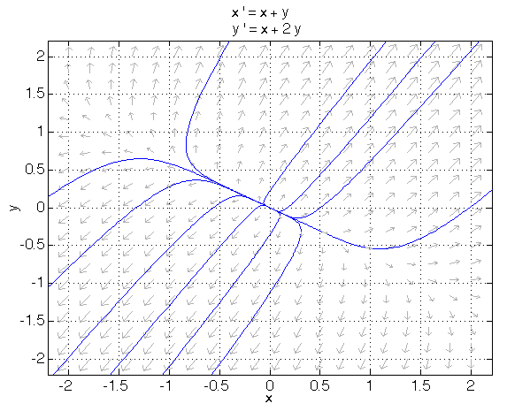

7 Linear ODEs with two variables
In chapter 3 we introduced and analyzed discrete-time models with multiple variables representing different demographic groups. In those models, the populations at the next time step depend on the population at the current time step in a linear fashion. More generally, any model with only linear dependencies can be represented in matrix form. In this chapter we will learn how to analyze the behavior of these models, and identify all possible classes of linear dynamical systems.
The main concept of this chapter are the special numbers and vectors associated with a matrix, called eigenvalues and eigenvectors. Any matrix can be thought of as an operator acting on vectors, and transforming them in certain ways. Loosely speaking, this transformation can be expressed in terms of special directions (eigenvectors) and special numbers that describe what happens along those special directions. Finding the eigenvalues and eigenvectors of a matrix allows us to understand the dynamics of biological models by classifying them into distinct categories.
In the modeling section, we will develop some intuition for modeling activators and inhibitors of biochemical reactions. We will then learn how to draw the flow of two-dimensional dynamical systems in the plane. In the analytical section, we will define eigenvectors and eigenvalues, and use this knowledge to find the general solution of linear multi-variable systems. In the computational section, numerical solutions of eigenvalues and eigenvectors will be applied to classifying all linear multi-dimensional systems, and to plotting the solutions, both over time and in the plane. Finally, in the synthesis section we will use a light-hearted model of relationship dynamics to illustrate how to analyze linear dynamical systems.
7.1 Flow in the phase plane
7.1.1 activators and inhibitors in biochemical reactions
Suppose two gene products (proteins) regulate each others’ expression. Activator protein \(A\) binds to the promoter of the gene for \(I\) and activates its expression, while inhibitor protein \(I\) binds to the promoter of the gene for \(A\) and inhibits its expression (here the variables stand for concentrations of the two proteins in the cell):
\[ \begin{aligned} \dot A & = & - \alpha I\\ \dot I & = & \beta A \end{aligned} \]
\(\alpha\) and \(\beta\) are positive rate constants. They represent the rate of inhibition of \(A\) by \(I\), and of activation of \(I\) by \(A\), respectively. Let us now complicate the model by adding self-inhibition. It is common for regulatory proteins to inhibit their own production. Then, we have the following system of equations:
\[ \begin{aligned} \dot A & = & - \gamma A - \alpha I\\ \dot I & = & \beta A - \delta I \end{aligned} \]
Here we have added two rates of self-inhibition \(\gamma\) and \(\delta\). This is a system of two coupled ODEs, and we will learn how to analyze these models both analytically and graphically.
7.1.2 phase plane portraits
Before we learn about the analytical tools of linear algebra, let us think intuitively about the effect of the variables on each other. The best way to describe this is through plotting the geometry of the flow prescribed by the differential equations. As we saw, for one-dimensional ODEs the direction of the change of the dependent variable (also known as the flow) could be shown as arrows on a line. A single variable can only increase, decrease, or stay the same (at a fixed point). In two dimensions there is more freedom. The flow is plotted on the phase plane, where for any combination of the two variables (say \(x,y\)) the ODE gives the derivatives of \(x\) and \(y\). This vector gives the flow, or the rate of change at the particular point in the plane. Intuitively, the flow describes the direction in which the system is pulling the 2-dimensional solution. If we plot the progress of a solution of ODE (all the values of \(x\) and \(y\) starting with the initial condition) we will obtain a trajectory in the phase plane. The arrows of the flow are tangent to any trajectory curve, since they plot the derivatives of \(x,y\).
Example: positive relationship between the variables Consider the following system of differential equations:
\[ \begin{aligned} \dot x & = & x + y \\ \dot y & = & x + 2y \end{aligned} \] (eq-ode1)
This is system is coupled, with \(x\) having an effect on \(y\) and vice versa. Specifically, the signs of the constants mean that positive values of \(x\) have the effect of increasing \(y\) (and vice versa), while negative values of \(x\) have the effect of decreasing \(y\) (and vice versa). For any pair of values of \((x,y)\), there is a flow prescribed by the ODEs. E.g., when \(x=1, y=1\), the derivatives are \(\dot x = 2, \dot y = 3\). This means that the flow at that point is given by the vector \((2,3)\), and can be plotted in the \(x,y\) phase plane. This can be done for any pair of values of \(x\) and \(y\), and plotted to give the phase plane portrait in figure {numref}fig-ode1.

eq-ode1Observe that the overall dynamics of the systems are directed outward from the origin, as we expect from the ODEs. The blue lines on the plot are some sample trajectories. The solution over time for both \(x\) and \(y\) will either grow toward positive infinity, or decay to negative infinity.
Example: negative relationship between the variables Consider the following system of differential equations, where \(y\) has an effect on \(\dot x\) opposite of its own sign. That is, negative values of \(y\) contribute to the growth of \(x\), and vice versa.
\[ \begin{aligned} \dot x & = & -y \\ \dot y & = & x \end{aligned} \] (eq-ode2)
As above, the flow at any one point is given by the ODEs. E.g. at \((0,1)\) the two derivatives prescribe flow in the \((1,0)\) (up) direction, while at \((1,0)\) the flow is in the \((0,-1)\) direction. Figure {numref}fig-ode2 shows the arrows of flow in the phase plane around the origin. Note that the arrows go around in a circular pattern around the origin - this shows oscillatory flow of solutions.

eq-ode2Let us consider the trajectories of \(x\) and \(y\) in time. The blue curves in the phase plane plot demonstrate the solutions go around the origin and return to the same point. This means that the behavior of the solutions over time is periodic, with oscillations going from positive to negative numbers and back forever.
7.2 Solutions of linear two-variable ODEs
Let us start by considering two variable ODEs that do not affect each other:
Example: two uncoupled ODEs In general, for a two-variable system, the value of one variable affects the other. In the equations above, the terms with the constants \(b\) and \(c\) provide what is known as coupling between the two variables. Let us look at the primitive situation where the two variables are uncoupled, as an illustration of solving two-dimensional ODEs. If we set the coupling constants \(b\) and \(c\) to 0, we get:
\[ \begin{aligned} \dot x & = & ax \\ \dot y & = & dy \end{aligned} \]
Using our knowledge of 1D linear ODE, we can solve the two equations independently to get the following: \(x(t) = x_0 e^{at}\) and \(y(t) = y_0 e^{dt}\). The solutions can be written in vector form:
\[ \left(\begin{array}{c}x(t) \\y(t)\end{array}\right) = x_0 e^{at} \left(\begin{array}{c}1 \\0\end{array}\right)+y_0 e^{dt}\left(\begin{array}{c}0\\1\end{array}\right) \]
This is another way of writing that the dynamics of variable \(x\) is exponential growth (or decay) with rate \(a\), and ditto \(y\), with rate \(d\). Given the initial conditions \((x_0, y_0)\), we can divide the behavior of the solutions into a sum of two vectors, each growing or decaying at its own rate.
Linear algebra allows us to find the solution for two-dimensional ODEs where the variables are interdependent using the same idea. The general (homogeneous) ODE with two dependent variables can be written as follows:
\[ \begin{aligned} \dot x & = & ax + by \\ \dot y & = & cx + dy \end{aligned} \]
We can write this in matrix form like this:
\[ \left(\begin{array}{c}\dot x \\ \dot y \end{array}\right) = \left(\begin{array}{cc}a & b \\c & d\end{array}\right)\left(\begin{array}{c}x \\ y \end{array}\right) \]
Let us call the matrix \(A\), and represent the vector \((x,y)\) as \(\vec {x}\), then the general linear equation can be written like this:
\[ \dot{ \vec{ x}} = A \vec{x} \] (gen-lin-mult)
This notation is intended to make plain the similarity with the linear 1D ODE: \(\dot x = a x\). This similarity is deep and substantial, in that linear equations in multiple dimensions share the same basic exponential form. In general, all solutions of linear equations can be written as a sum of exponentials multiplying different vectors:
7.3 Classification of linear systems
We have seen that linear algebra allows us to write down the solution of a multivariable dynamical system into a sum of exponential terms. In this section we use computational techniques to find the eigenvalues and eigenvectors of a system, and then produce the phase portraits of the linear systems. There are only a few different types of flow possible for linear systems, and we will classify them.
7.3.1 real eigenvalues
Let us consider the fixed points of the linear system: since both \(\dot x =0\) and \(\dot y = 0\) must be zero, the only fixed point is the origin \((0,0)\). We will see that the stability of the fixed point depends on the sign of the real part of the eigenvalue.
Suppose we have a positive real eigenvalue. The solution in the direction of the corresponding eigenvector is then described by \(Ce^{\lambda t}\), \(\lambda > 0\), which is exponential growth. The means that the solution is going to grow in the direction of the eigenvector away from the origin, and thus the origin is an unstable fixed point (in this direction). This type of fixed point is called an unstable node.
On the other hand, if \(\lambda < 0\) for both eigenvalues, the solution decays exponentially and thus approaches the origin, so the fixed point is stable. This type of fixed point is called a stable node.
Since there are two different eigenvalues, one may be positive while another is negative. In this case, the fixed point is is called a saddle point for geometric reasons: solutions flow toward it in one direction, like a marble along the forward-backward axis of a saddle on a horse and flow away from it along the sideways direction on a saddle. Then, the fixed point is stable when approached along one eigenvector, but unstable along the other. What happens if the initial condition is not on either eigenvector? I will use a fact of linear algebra that given any two (non-colinear) 2D vectors, any vector in the plane can represented as a sum (with some coefficients) of these two. Thus, the general solution can be written as follows:
\[ \left(\begin{array}{c} x(t) \\ y(t) \end{array}\right) =C_1e^{at} \left(\begin{array}{c}v_1\\v_2\end{array}\right)+C_2 e^{-bt}\left(\begin{array}{c}u_1\\u_2\end{array}\right) \]
where \(a,b>0\). Then we see that the component in the direction of the first eigenvector will grow, while the component along the second eigenvector will decay. Thus, as \(t \rightarrow \infty\), all solutions will approach the vector with the unstable eigenvalue, except those with initial conditions right on the eigenvector corresponding to the stable eigenvalue. This means that the fixed point is essentially unstable, because only trajectories which start exactly along the stable direction approach the fixed point in the long run, while others, may approach the fixed point for a finite time, flow away when the unstable component with the positive eigenvalue takes over, as shown in figure .
[Phase plane flow for a linear system with a saddle point] (images/week6_pp1.png)
7.3.2 complex eigenvalues
If the argument of the square root is negative, eigenvalues may be complex numbers, which we can write like this: \(a+bi\). Using Euler’s formula, we can write down the time-dependent part of the solutions as the following:
\[ e^{(a + bi)t} = e^{at}e^{bit}= e^{at}(\cos(bt)+i\sin(bt)) \]
The behavior of these solutions combines exponential growth or decay from the real part, with the oscillations produced by the imaginary part. This describes either exponentially growing or decaying oscillations, which look like decaying waves in time, or as a spiral in the phase plane:

Thus we see that the stability of the fixed point with complex eigenvalues depends on the sign of the real part. Purely imaginary eigenvalues produce periodic oscillations, which keep the same amplitude, as we saw in the example in the modeling section.
7.3.3 classification of linear systems
| Stability | positive real parts | negative real parts | one positive, one negative | zero real part |
|---|---|---|---|---|
| real: | unstable node | stable node | saddle point | fixed line |
| complex: | unstable spiral | stable spiral | N/A | center point |
Eigenvalues of linear ODEs define type of phase plane
The table above summarizes all the different types of flows in the phase plane possible for linear systems, in terms of the behavior of solutions relative to the fixed point at the origin. If the eigenvalues are real, the solutions will be exponential in nature. There are three possibilities for nonzero eigenvalues: stable node (both eigenvalues are negative), unstable node (both eigenvalues are positive), and a saddle point (mixed signs). If one of the eigenvalues is zero, this means that there is not flow along one direction, so there is a line of fixed points in the direction of the corresponding eigenvector (if both eigenvalues are zero, there is no flow at all.)
For complex eigenvalues, there are three possibilities: if the real part is positive, the solution will grow and oscillate (oscillations with exponentially increasing amplitude), if the real part is negative, the solution will decay and oscillation (oscillations with exponentially increasing amplitude), and if the real part is zero (pure imaginary eigenvalues) the solution will oscillate with constant amplitude. The first type is called an unstable spiral, the second a stable spiral, and the third a center. It is not possible for complex eigenvalues of two-dimensional systems to have different signs of real parts, because as the formula shows, the real part is the same for both and is equal to the trace divided by two.
7.4 Dynamics of romantic relationships
We examine a model, taken from (strogatz_nonlinear_2001?), that applies dynamical systems modeling to a pressing concern for many humans: the prediction of dynamics of a romantic relationship. There are several unrealistic assumptions involved in the following model: first, that love or affection can be quantified, second, that any changes in relationship depend only on the emotions of the two people involved, and third, that the rate of change of the two love variables depend linearly on each other.
If we can give those assumptions the benefit of the doubt (which is how all relationships begin), we can write down a system of ODEs to describe a romantically involved couple. Here \(X\) and \(Y\) are dynamic variables that quantify the emotional states of the two lovers:
\[ \begin{aligned} \dot X &=& aX+ bY \\ \dot Y &=& cX + dY \end{aligned} \]
Let us denote positive feelings (love) with positive values of \(X,Y\), while negative values signify negative feelings (hate.) The significance of the parameters can be interpreted as follows: \(a,d\) describe the response of the two people to their own feelings, while \(b,c\) correspond to the effect the other person’s feeling has on their own. For example, a person whose feeling grow as the other person’s affection increases can be modeled with a positive value of \(b\) (or \(c\)). On the other hand, a person whose own feelings are dampened by the other one’s excessively positive emotions, can be decribed by a negative value of \(b\) or \(c\). Their own feelings can also play a role, either positive or negative, reflected in the sign of the constants \(a\) and \(d\).
Using mathematical modeling, we can answer the following basic questions:
Given a set of values for parameters \(a, b, c, d\), predict the dynamic behavior of the model relationship.
Find conditions for stability and existence of oscillations in the dynamical system, expressed as a function of the parameters.
To address the first question, here are some simplified scenarios for our two lovers in the model.
Detached lovers: Let the emotional state of the two lovers depend only on their own emotions, for example:
\[ \begin{aligned} \dot X & = & X \\ \dot Y & = & -Y \end{aligned} \]
To classify the behavior of the model, we find the eigenvalues of the system. In this case, they are the diagonal elements of the matrix, 1 and -1. This mean that the origin is a saddle point, and therefore it is unstable. In the \(X\) direction, the emotions are going to grow without bound, either in the love or hate direction, while in the \(Y\) direction, the emotions are going to decay to zero (indifference). This should be no surprise, that since the two equations are independent, the lovers have no emotional effect on each other.
Lovers with no self-awareness: Here is an alternate situation: suppose two lovers were not influenced by their own emotions, but were instead attuned to the emotional state of the other. Then we might have the following model, in which lover \(X\) reacts in the opposite way by emotions of lover \(Y\), but lover \(Y\) is, contrariwise, spurred by the love or hate of \(X\) in the same direction:
\[ \begin{aligned} \dot X & = & -Y \\ \dot Y & = & X \end{aligned} \]
We find the eigenvalues of the system by using the expression in equation [eg:2D_eig]: \(\lambda = (0 \pm \sqrt{-4})/2 = \pm i\). Pure imaginary eigenvalues tell us that the origin is a center point, with the solutions periodic orbits around the origin. Psychologically, we can interpret this scenario as cycles of love and hate, never growing and never decaying. The magnitude of these oscillations depends on the initial state of the system, that is, the feelings the lovers had at the beginning of the relationship.
We can now address the second question, and find under what circumstances different types of dynamic behaviors occur. We consider the general model, and ask what kinds of eigenvalues are possible for different parameter values. First, we write down the general expression for the eigenvalues, from equation [eg:2D_eig]:
\[ \lambda = \frac{a+d \pm \sqrt{(a+d)^2-4(ad-bc)}}{2} \]
There are two properties we are interested in: stability and existence of oscillations. Recall that stability is determined by the sign of the real part of the eigenvalues. If the square root is imaginary, then the real part is simply the trace (\(a+d\)), but if the square root is real, we have to consider the whole expression to determine stability. So let us first state the condition for existence of oscillations (imaginary square root):
Complex eigenvalues: oscillatory solutions \(4(ad-bc) > (a+d)^2\). If this expression holds, the square root is imaginary, and the stability is determined by the sign of the trace. That is, if \(a+d > 0\), the system is unstable, and will grow into unbounded love or hate, but if \(a+d < 0\), then the system is stable, and will spiral to indifference. The special case \(a+d = 0\), such as we saw above, means that strictly periodic love/hate cycles are the solutions.
Real eigenvalues: exponential growth and/or decay \(4(ad-bc) < (a+d)^2\). In this case, the square root is real, and no oscillatory solutions exist. In order to determine whether this implies exponential growth, decay, or a combination, we must weigh the relative sizes of \((a+d)\) and \(\sqrt{(a+d)^2-4(ad-bc)}\). If \(|a+d| > \sqrt{(a+d)^2-4(ad-bc)}\), then adding or subtracting the square root does not change the sign of \((a+d)\): if it is negative, both eigenvalues are negative, and the origin is a stable node, and if the trace is positive, the origin is an unstable node. However, if the absolute value of the root outweighs the absolute value of the trace \(|a+d| < \sqrt{(a+d)^2-4(ad-bc)}\) , then either adding or subtracting the root will change the sign of the eigenvalues. Therefore, one eigenvalue is positive and the other is negative, and the origin is a saddle point. The emotions will run unchecked in some preferred direction, possibly combining love and hate of the two lovers.
These conditions are not intuitive, and it took some work to express them. The benefit is that now, given any values of the self-involvement parameters \(a,d\) and the sensitivity parameters \(b,c\) we can predict the long-term dynamics of the model relationship. Whether the results have any bearing on reality, of course, depends on how well the reality is described by these primitive assumptions.